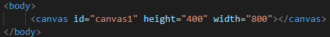
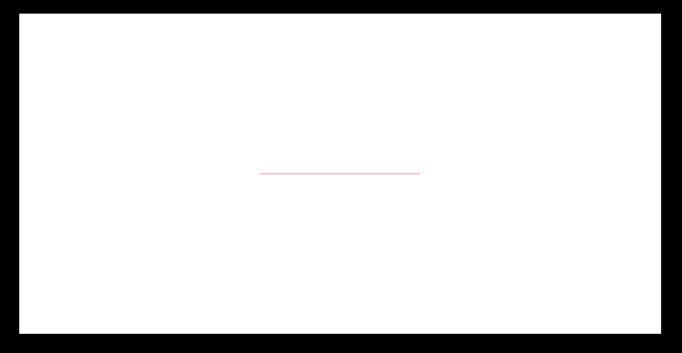
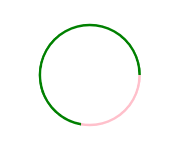
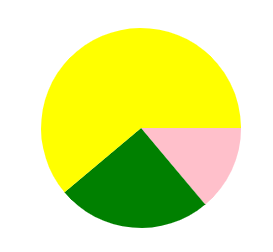
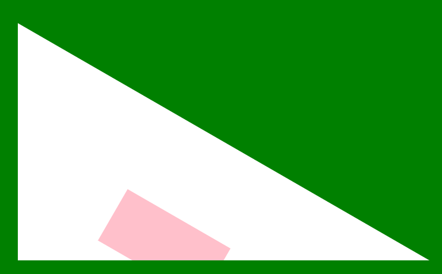
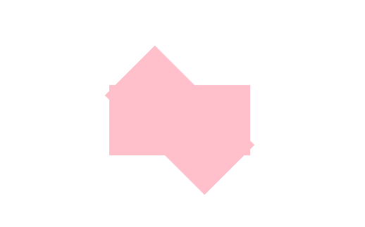
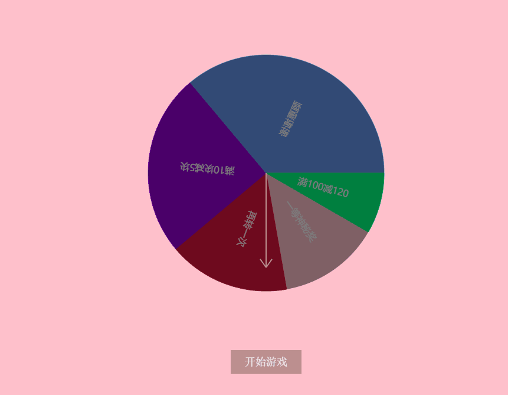
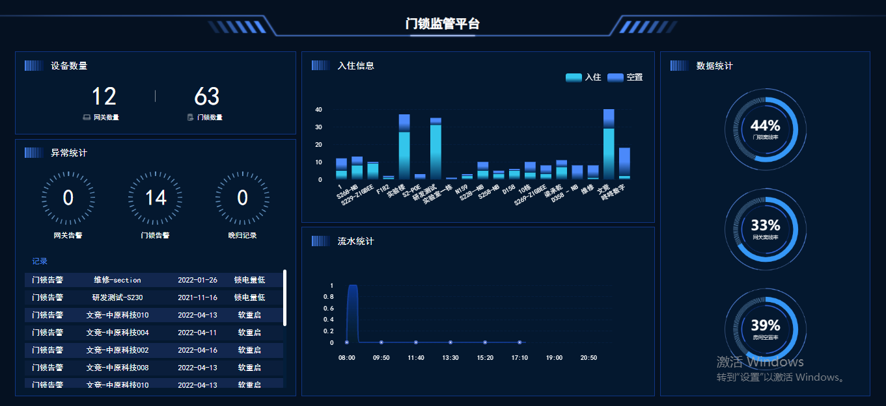
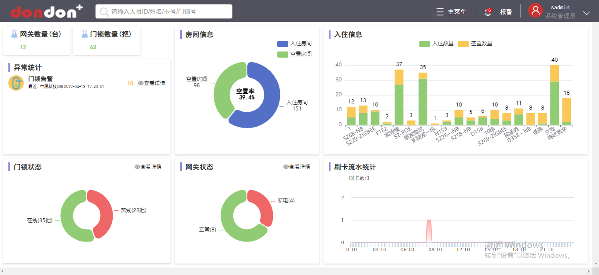

web前端绘图之canvas
canvas标签
1.2.3.4.5.//canvas绘图那canvas标签是不能少的//canvas设置宽高一定要在行间设置，不要通过内联或者外联样式去设置，不然绘制出来的东西会变形//html部分只需要写一个canvas标签,大部分工作都是依靠js来完成的 //通过js获取到canvas，然后再去做别的其它的事情html部分
js获取canvas画一个线
1.2.3.4.5.6.7.8.9.10.let canvas = document.getElementById("canvas1"),//获取canvas元素 ctx = canvas.getContext("2d");//这是canvas自带的，返回canvas的执行上下文,绘图全靠它 ctx.beginPath();//开启一个新路径，清除之前的路径 ctx.moveTo(300, 200);//线开始的地方 ctx.lineTo(500, 200);//线结束的地方 ctx.strokeStyle = "pink";//设置画笔颜色 ctx.lineWidth = "2"//设置画笔宽度 ctx.stroke();//开始绘制方法 ctx.closePath();//关闭这个路径 //canvas左上角的那个角为原点效果
矩形
1.2.3.4.5.6.7.8.9.10.11.12.13.//五种方法//第一种: 线性ctx.rect(左上角的x,左上角的y,宽,高);ctx.stroke();//第二种: 线性，和第一种一样ctx.strokeRect(左上角的x,左上角的y,宽,高);//第三种: 填充型ctx.rect(左上角的x,左上角的y,宽,高);ctx.fill();;//第四种ctx.fillRect(左上角的x,左上角的y,宽,高);//第五种: 清除一块图形ctx.clearRect(左上角的x,左上角的y,宽,高)圆
1.2.3.4.5.6.7.8.ctx.arc(圆心x,圆心y,半径,弧起始,弧结束,是否逆向);ctx.stroke();//画线型的弧形ctx.fill();//画带填充的弧形//画圆形给的度数都要转成弧度//度数转弧度: n * Math.PI / 180//弧度转度数: n * 180 / Math.PI//逆向就是朝着原来相反的位置画，画出来的弧和不是逆向画的弧构成一个圆...例子
1.2.3.4.5.6.7.8.9.10.11.12.13.14.15.16.17.18.let canvas = document.querySelector("#canvas");let canvasW = canvas.width, canvasH = canvas.height;let ctx = canvas.getContext("2d");function darcToArc(n) { return n * Math.PI / 180;}ctx.beginPath();ctx.arc(canvasW / 2, canvasH / 2, 100, darcToArc(0), darcToArc(100), false);ctx.strokeStyle = "pink";ctx.lineWidth = 5;ctx.stroke();ctx.closePath();ctx.beginPath();ctx.arc(canvasW / 2, canvasH / 2, 100, darcToArc(0), darcToArc(100), true);ctx.strokeStyle = "green";ctx.stroke();ctx.closePath();效果
画饼图案例
1.2.3.4.5.6.7.8.9.10.11.12.13.14.15.16.17.18.19.20.21.22.23.24.25.26.function Darc(startAng, endAng, color) { this.endAng = endAng; this.startAng = startAng; this.color = color;}let img = document.getElementsByTagName("img")[0];let canvasW = parseInt(canvas.width), canvasH = parseInt(canvas.height);let data = [new Darc(0, 50, "pink"), new Darc(50, 140, "green"), new Darc(140, 0, "yellow")];let arcX = canvasW / 2, arcY = canvasH / 2, arcR = 100;function drawPieChart(arcX, arcY, arcR, color, endAng, startAng) { ctx.beginPath(); ctx.moveTo(arcX, arcY); ctx.lineTo(arcX + arcR * Math.cos(d2a(startAng)), arcY + arcR * Math.sin(d2a(startAng))); ctx.arc(arcX, arcY, arcR, d2a(startAng), d2a(endAng), false); ctx.moveTo(arcX, arcY); ctx.lineTo(arcX + arcR * Math.cos(d2a(endAng)), arcY + arcR * Math.sin(d2a(endAng))); ctx.fillStyle = color; ctx.fill(); ctx.closePath(); }for (let darc of data) { drawPieChart(arcX, arcY, arcR, darc.color, darc.endAng, darc.startAng);}效果
transform
1.2.3.4.5.6.7.8.9.10.11.12.13.14.15.16.17.18.19.20.21.//canvas里面的transform和css3里面的是一样的,只不过canvas里面的没有skew，还有本身操作的是canvas//所以很麻烦[苦笑]//如果轻易操作，会影响到后面继续绘制元素//例子let canvas = document.querySelector("#canvas"), ctx = canvas.getContext("2d"), canvasW = canvas.width, canvasH = canvas.height;function darcToArc(n) { return n * Math.PI / 180;}ctx.beginPath();ctx.rotate(darcToArc(30));ctx.fillStyle = "#fff";ctx.fillRect(0, 0, canvasW, canvasH);ctx.closePath();ctx.beginPath();ctx.rect((canvasW - 200) / 2, (canvasH - 100) / 2, 200, 100);ctx.fillStyle = "pink";ctx.fill();ctx.closePath();本来我只想把白色的矩形旋转30度,没想到粉红色的矩形也转了,而且还不是按照圆心转的，是按照canvas原点,当然东西做出来不可能是没有用的,有没有办法解决，答案是有，看后续
物体不按照中心旋转解决
1.2.3.4.5.6.7.//canvas使用rotate旋转物体不是按照图形中心进行旋转，而是按照canvas的原点进行旋转//而且canvas里面transform的属性的执行顺序是按照代码后面先执行再执行前面的//首先我们默认把图形的中心移动到原点，然后旋转后再将图形移动到(图形宽度的一半 + 本来要将图形画到的点x位置,图形高度的一半 + 本来要将图形画到1点y位置);//然后物体就是围绕自己中心旋转//rotate 和 translate 和 scale执行都是累积的，比如第一次执行rotate(30 * Math.PI / 180),第二次执行roate(30 * Math.PI / 180) 第二次就是旋转60弧度了//当然这也是有解决办法的，就是利用save和restore方法//save就是保存当前画布的，restore就是恢复上一次保存的画布代码
1.2.3.4.5.6.7.8.9.10.11.12.13.14.15.16.let canvas = document.getElementById("canvas"), canvasHeight = canvas.offsetHeight, canvasWidth = canvas.offsetWidth, ctx = canvas.getContext("2d");ctx.beginPath();ctx.save();ctx.translate((canvasWidth - 200) / 2 + 100, (canvasHeight - 100) / 2 + 50);ctx.rotate(45 * Math.PI / 180);ctx.rect(-100, -50, 200, 100);ctx.fillStyle = "pink";ctx.fill();ctx.closePath();ctx.restore();ctx.rect((canvasWidth - 200) / 2, (canvasHeight - 100) / 2, 200, 100);ctx.fillStyle = "pink";ctx.fill();效果显示
抽奖案例
1.2.3.4.5.6.7.8.9.10.11.12.13.14.15.16.17.18.19.20.21.22.23.24.25.26.27.28.29.30.31.32.33.34.35.36.37.38.39.40.41.42.43.44.45.46.47.48.49.50.51.52.53.54.55.56.57.58.59.60.61.62.63.64.65.66.67.68.69.70.71.72.73.74.75.76.77.78.79.80.81.82.83.84.85.86.87.88.89.90.91.92.93.94.95.96.97.98.99.100.101.102.103.104.105.106.107.108.109.110.111.112.113.114.115.116.117.118.119.120.121.122.123.124.125.126.127.128.129.130.131.132.133.134.135.136.137.138.139.140.141.142.143.144.145.146.147.148.149.150.151.152.153.154.155.156.157.158.159.160.161.162.163.164.165.166.167.168.169.170.171.172.173.174.175.176.177.178.let canvas = document.getElementById("canvas"); let canvasHeight = canvas.offsetHeight, canvasWidth = canvas.offsetWidth; let ctx = canvas.getContext("2d"); let gameStatus = "over"; function drac(num, type) { if (type == "degree") { return num * 180 / Math.PI; } else { return num * Math.PI / 180; } } function drawPieChart(x, y, r, fillColor, startAng, endAng, text, textColor = "#FFFAFA") { ctx.beginPath(); ctx.moveTo(x, y); ctx.lineTo(x + r * Math.cos(drac(startAng)), y + r * Math.sin(drac(startAng))); ctx.arc(x, y, r, drac(startAng), drac(endAng), false); ctx.moveTo(x, y); ctx.lineTo(x + r * Math.cos(drac(endAng)), y + r * Math.sin(drac(endAng))); ctx.fillStyle = fillColor; ctx.fill(); ctx.closePath(); ctx.beginPath(); ctx.textAlign = "center"; ctx.textBaseline = "middle"; ctx.fillStyle = textColor; ctx.font = '16px 微软雅黑'; ctx.save(); ctx.translate(x + r * Math.cos(drac(startAng + (endAng - startAng) / 2)) / 2, y + r * Math.sin(drac(startAng + (endAng - startAng) / 2)) / 2); ctx.rotate(drac(startAng + (endAng - startAng) / 2)); ctx.fillText(text, 0, 0); ctx.restore(); ctx.closePath(); } let x = canvasWidth / 2, y = canvasHeight / 2 - 50, r = 200; // let data = [{ //startAng: 30, //endAng: 80, //color: "pink", //text: "一等神秘奖" //}, { //startAng: 80, //endAng: 140, //color: "#DC143C", //text: "再转一次" //}, { //startAng: 140, //endAng: 230, //color: "#9400D3", //text: "满10块减5块" //}, { //startAng: 230, //endAng: 360, //color: "#6495ED", //text: "谢谢惠顾" //}, { //startAng: 0, //endAng: 30, //color: "#00FF7F", //text: "满100减120" //}]; let title = "今日份回家干什么"; let data = [{ startAng: 0, endAng: 20, text: "写页面", color: "#00FF7F" }, { startAng: 20, endAng: 360, text: "刷视频", color: "#6495ED" }]; let rotateNums = Math.random() * 1000, count = 0; let arc = 0; //requestAnimationFrame(loop); function winPrizeIs(text) { ctx.beginPath(); ctx.fillStyle = "#000"; ctx.fillText(text, canvasWidth / 2, 100); ctx.closePath(); } function gameOver() { //游戏结束 gameStatus = "over"; drawStartBtn(); let rotate = arc % 360; for (let item of data) { if ((item.startAng + rotate) % 360 <= 90 && (item.endAng + rotate) % 360 >= 90 || ((item.startAng + rotate) % 360 >= 90 && (item.endAng + rotate) % 360) >= 90 && (item.endAng + rotate) % 360 <= (item.startAng + rotate) % 360) { winPrizeIs(item.text); } } } function drawTitle() { ctx.font = "20px bold 宋体"; ctx.textAlign = "center"; ctx.textBaseline = "middle"; ctx.fillText(title, canvasWidth / 2, 50); } function loop() { if (count >= rotateNums) { gameOver(); return; } count++; arc += 50 * Math.random(); ctx.clearRect(0, 0, canvasWidth, canvasHeight); drawTitle(); for (let item of data) { drawPieChart(x, y, r, item.color, item.startAng + arc, item.endAng + arc, item.text); } drawPointer(); requestAnimationFrame(loop); } function drawPointer() { ctx.beginPath(); ctx.fillStyle = "rgba(0,0,0,0.5)"; ctx.arc(x, y, r, 0, drac(360), false); ctx.fill(); ctx.closePath(); ctx.beginPath(); ctx.moveTo(x, y); ctx.lineTo(x, y + r * 0.8); ctx.moveTo(x, y + r * 0.8); ctx.lineTo(x + 10, y + r * 0.8 - Math.sqrt(200)); ctx.moveTo(x, y + r * 0.8); ctx.lineTo(x - 10, y + r * 0.8 - Math.sqrt(200)); ctx.strokeStyle = "#BC8F8F"; ctx.lineWidth = 2; ctx.stroke(); } let btnW = 120, btnH = 40, btnY = 650; function drawStartBtn() { ctx.beginPath(); ctx.rect((canvasWidth - btnW) / 2, btnY, btnW, btnH); ctx.fillStyle = "#BC8F8F"; ctx.fill(); ctx.font = "18px 宋体"; ctx.fillStyle = "#F5F5F5"; ctx.fillText("开始游戏", (canvasWidth - 120) / 2 + btnW / 2, btnY + btnH / 2); ctx.textAlign = "center"; ctx.textBaseline = "middle"; ctx.closePath(); } function gameInit() { drawTitle(); for (let item of data) { drawPieChart(x, y, r, item.color, item.startAng + arc, item.endAng + arc, item.text); } drawPointer(); drawStartBtn(); } gameInit(); function gameStart(ev) { let offsetX = ev.offsetX, offsetY = ev.offsetY; if (offsetX >= (canvasWidth / 2 - btnW / 2) && offsetX <= (canvasWidth / 2 + btnW / 2) && offsetY <= btnY + btnH && offsetY >= btnY) { //点击开始游戏按钮 if (gameStatus === "start") { return; } if (count != 0) { rotateNums = Math.random() * 1000; while (rotateNums < 100) { rotateNums = Math.random() * 1000; } count = 0; } gameStatus = "start"; requestAnimationFrame(loop); } } canvas.addEventListener("click", gameStart, false);效果
drawImage
使用方法
1.2.3.4.5.6.7.8.9.10.//ctx.drawImage(相对应的图片dom或者vedio视频或者canvas，图片上的x轴，图片上的y轴，取图片上的宽，取图片上的高，canvas上的x点，canvas上的y点，画在canvas上面的宽度，画在canvas上面的高度)let canvas = document.querySelector("#canvas"), ctx = canvas.getContext("2d"), canvasHeight = canvas.offsetHeight, canvasWidth = canvas.offsetWidth;let image = new Image(); image.src="./1.jpeg"; image.onload = function(){ ctx.drawImage(this,200,200,600,400,0,0,canvasWidth / 2,canvasHeight / 2); }效果
原图
canvas遮罩 -> globalCompositeOperation属性
1.2.3.//这个是用一个图形取遮罩一个图形//主要常用就两个属性值 destination-in 显示图形遮罩里面的内容//destination-out显示遮罩图形外面的内容
1.2.3.4.5.6.7.8.9.10.11.12.let canvas = document.querySelector("#canvas"), ctx = canvas.getContext("2d"), canvasHeight = canvas.offsetHeight, canvasWidth = canvas.offsetWidth;let image = new Image(); image.src="./1.jpeg"; image.onload = function(){ ctx.drawImage(this,0,0,canvasWidth,canvasHeight); ctx.globalCompositeOperation = "destination-in"; //ctx.globalCompositeOperation = "destination-out"; ctx.fillRect(canvasWidth / 2 - 100,canvasHeight / 2 - 50,200,100); }效果图
destination-in
destination-out
这个中间的白色矩形是canvas的背景,不是矩形的颜色,矩形是黑色的
原图
canvas操作像素点
1.2.3.4.5.//通过getImageData获取到canvas身上指定范围的像素点,总共像素点里包括了 高 * 宽 * 4,一个像素占四个,分别是r,g,b,a//ctx.getImageData(0,0,canvasWidth,canvasHeight);获取canvas身上所有的像素点//最后将操作完成的像素点再通过putImageData赋值给canvasctx.putImageData(开始通过getImageData拿到的像素点对象,操作点x,操作点y)//这一系列操作不能在本地演示,需要通过服务器操作才能拿到ImageData代码演示
1.2.3.4.5.6.7.8.9.10.11.12.13.14.let canvas = document.getElementById("canvas"), ctx = canvas.getContext("2d"), canvasWidth = canvas.offsetWidth, canvasHeight = canvas.offsetHeight;let img = new Image(); img.src = "http://localhost/1.jpeg"; img.onload = function(){ctx.drawImage(this,0,0,canvasWidth,canvasHeight);let imageData = ctx.getImageData(0,0,canvasWidth / 2,canvasHeight / 2); for(let i = 0;i < imageData["data"].length;i+=4){ imageData["data"][i] = imageData["data"][i+1] = imageData["data"][i+2]=(imageData["data"][i] + imageData["data"][i+1] + imageData["data"][i+2]) / 3; } ctx.putImageData(imageData,0,0); }效果
将该图片的四分之一改了,让rgb的值都是一样的,所以就是灰色的了,这个功能很强大,可以每个像素点操作
canvas转成base64传到服务器案例
将canvas转成图片通过canvas.toDataURL("image/图片类型")
1.2.3.4.5.6.7.8.9.10.11.12.13.14.15.16.17.18.19.20.21.22.23.24.25.26.27.28.29.30.31.32.33.34.35.36.37.38.39.40.41.42.//首先思路是这样的，将canvas转换成base64传到服务器保存，然后再通过服务器返回的图片地址用a标签自带的请求去下载相应文件//前端代码let canvas = document.getElementById("canvas"), ctx = canvas.getContext("2d"), canvasWidth = canvas.offsetWidth, canvasHeight = canvas.offsetHeight; let img = new Image(); img.src = "http://localhost/1.jpeg"; img.onload = function() { ctx.drawImage(this, 0, 0, canvasWidth, canvasHeight); let imageData = ctx.getImageData(0, 0, canvasWidth / 2, canvasHeight / 2); for (let i = 0; i < imageData["data"].length; i += 4) { imageData["data"][i] = imageData["data"][i + 1] = imageData["data"][i + 2] = (imageData["data"][i] + imageData["data"][i + 1] + imageData["data"][i + 2]) / 3; } ctx.putImageData(imageData, 0, 0); } function uploadFile(file, url) { let form = new FormData(); form.append("file", file); let xhr = new XMLHttpRequest(); if (!xhr) { xhr = new ActiveXObject("Microsoft.XMLHTTP"); } xhr.open("POST", url, false); xhr.onreadystatechange = function() { if (xhr.readyState === 4 && xhr.status >= 200 && xhr.status <= 304) { let a = document.createElement("a"); a.setAttribute("href","http://localhost:8080/download?imageName="+xhr.responseText); a.setAttribute('download',xhr.reponseText); document.body.appendChild(a); a.click(); return; } } xhr.send(form); } let save = document.querySelector(".save"); save.addEventListener("click", saveCanvasImage, false); function saveCanvasImage() { let base64 = canvas.toDataURL("image/png"); uploadFile(base64, "http://localhost:8080/base64"); }
1.2.3.4.5.6.7.8.9.10.11.12.13.14.15.16.17.18.19.20.21.22.23.24.25.26.27.28.29.30.31.32.33.34.35.36.37.38.39.40.41.42.43.44.45.46.47.48.//后端nodejs代码const http = require("http");const fs = require("fs");const url = require("url");const {v4: uuidv4} = require("uuid");let server = http.createServer((req, res) => { res.setHeader("Access-Control-Allow-Origin","*"); let pathname,params; if(req.method === "GET"){ let query = url.parse(req.url,true); params = query.query; pathname = query.pathname; } if (req.url === "/base64") { let arr = []; req.on("data", data => { arr.push(data); }); req.on("end", () => { let buffer = Buffer.concat(arr); res.setHeader("Content-Type", "text/plain;charset=utf8"); saveImage(buffer); }); }else if (pathname === "/download" && req.method === "GET"){ let {imageName} = params; fs.readFile(imageName,(err,data) => { if(err){ res.end("获取失败"); return; } res.setHeader('Content-Disposition', 'attachment; filename=' + encodeURIComponent(imageName)); res.end(data); }); } function saveImage(file){ let imageName = uuidv4() + ".png"; console.log(file.toString().substring(0,100)); fs.writeFile(imageName,file.toString().split(",")[1],"base64",err => { if(err){ res.end("接收失败"); return; } res.writeHeader(200,{"Content-Type": "text/plain"}); res.end(imageName); })}});server.listen(8080);屏幕手机适配
1.2.3.//设置canvas的宽度为屏幕宽度再乘以屏幕的分辨率，最后再使用scale缩小屏幕分辨率倍值,高度也是一样的，因为canvas画的是非矢量图，所以要和屏幕1:1，否则屏幕会造成失帧现象//js获取屏幕分辨率: window.screen.height和window.screen.width//小程序: 先通过wx.getSystemInfoSync();然后通过.pixelRatio得到屏幕的分辨率小程序保存canvas
1.2.3.4.5.6.7.8.9.10.11.12.13.14.15.16.17.18.19.20.21.22.23.24.25.26.27.28.29.30.31.32.33.34.35.36.37.38.39.40.41.42.43.//首先通过wx.canvasToTempFilePath将canvas保存成图片//然后通过wx.saveImageToPhotosAlbum保存至本地//主要代码如下wx.showLoading({ title: '保存中',});wx.canvasToTempFilePath({ x: 0, y: 0, canvas: canvas, width: canvasWidth, height: canvasHeight, success(res) { console.log(res.tempFilePath); if (res.errMsg.indexOf("ok") != 1) { wx.saveImageToPhotosAlbum({ filePath: res.tempFilePath, success(res) { wx.hideLoading(); if (res.errMsg.indexOf("ok") != -1) { wx.showToast({ title: "保存成功" }); } }, fail(err){ wx.hideLoading(); wx.showToast({ title: "保存失败" }); console.log(err); } }) } }, fail(err) { wx.hideLoading(); wx.showToast({ title: '保存失败', }); console.log(err); }}, this);canvas画字
1.2.3.4.5.6.7.8.9.let canvas = ...,ctx = canvas.getContext("2d");ctx.beginPath();ctx.fillStyle = '';//设置绘制字体颜色,实体字用到ctx.font="fontStyle fontWeight fontSize fontFamily";//后面还有一些,但是我是没用过ctx.textAlign = "center";//水平居中ctx.textBaseLine = "middle";//垂直居中//上面两个操作起始就是将字体的绘制位置放到了中奖ctx.fillText("要绘制的字","绘制字的水平中点","绘制字的垂直中点");ctx.closePath();